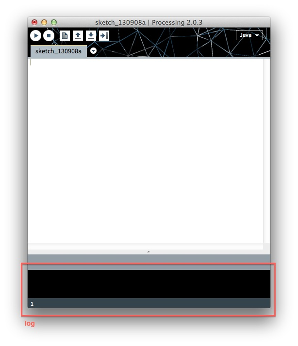
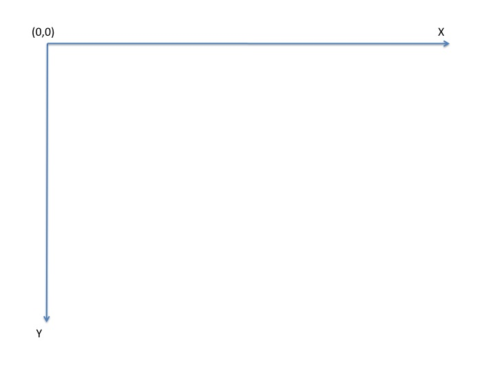

by Cédric Warny

To print something in the log:
println("Hello world");
When you declare a variable, you have to specify its type, like so:
VariableType variableName = variableValue;
Variable types can be generic (string, integer) or you can create your own types.
String myString = "Hello"; // The double slash introduces a comment in your code. Every statement in Processing must end with a semi-colon.
int a = 3; // This declares an integers variable named "a". You could have named it whatever you want --as long as the first letter of the name is lowercase.
boolean myBoolean = false; // "boolean" variables are true-false variables.
/* This is a multi-line
comment. Use this when
you have a lot to say. */
float x = 4.5; // "float" is the variable type for numbers with decimals. It stands for "floating number".
There are two families of variables: generic (integer, floating number, boolean, String, etc.) or created. Indeed, you can create your own type of variables. These custom variable types are known as classes. More on that later.
In general, the first letter of the declared type of a generic variable will be lowercase while the first letter of a created variable type will be uppercase. An exception among generic variable is String, whose first letter is uppercase.
Variable names always start lowercase.
When declaring a method, you have to specify what arguments (or inputs) that function takes and what type of variable that method returns (or outputs), if any:
VariableTypeToReturn myFunctionName(int firstInput, String secondInput) { // Method names start with lowercase.
// …
VariableTypeToReturn x = … ;
return x;
}
Example:
int addTwoNumbers(int firstNumber, int secondNumber) {
int sum = firstNumber + secondNumber;
return sum;
}
However, a function does not necessarily need to return anything. In that case, we write "void" as the variable type returned by the function:
int a = 3;
void addAnumberToA(int b) {
a = a + b;
}
int n = addTwoNumbers(3,4); // A function that returns something needs to have a variable ready to receive what it returns --here, "c".
println(n); // Prints 7 in the log.
int a = 3;
addAnumberToA(4); // A function that does not return anything does not need to have a variable ready to receives its output.
println(a); // Prints 7 in the log.
To create a new variable type, you have to define what that variable type does and how it works. You encapsulate all that in a class. A new variable type is known as a class. Here is how to declare a class:
class Awesome {
// Class name always starts with uppercase.
// What follows is a list of class attributes. It can be anything.
String myStringName = "I am awesome";
int anAwesomeInteger = 123;
// What follows is the class constructor. It is a special method that does not require to specify the output type and has to have the same name as the class (it thus has to have an uppercase first letter). The class contstructor is a method that is called when a class is instantiated. More on instatiation later.
Awesome() {
// …
}
// What follows is a list of methods of the class.
void firstMethod() {
// …
}
float secondMethod() {
// …
}
}
A class is a bundle of attributes and methods.
An object is an instance of the class of that object, much like in Plato’s Allegory of the Cave: Plato’s “Ideas” or “Forms” correspond to the Classes; they are the abstract concepts or blueprints behind each object; whereas Plato’s “shadows” correspond to the objects, that is, concrete “materializations” of an Idea or “instantiations” of a Class. For instance, my car out there, a flashy-red Opel Astra, is an instance of the class “car”.
To instantiate a class:
Awesome myAwesomeObject = new Awesome();
An object thus becomes just a new, non-generic type of variable. And it can be used as any type of variable: as input or output to functions. Like for generic types of variables, the variable name myAwesomeObject must be typed (Awesome). The only difference is that to create a non-generic type of variable, you have to use the keyword "new". What follows after "new" is a call to the class constructor.
The use of classes to bundle a set of attributes and methods together and objects as instances of these classes is known as object-oriented programming. This is a great programming paradigm that aims to be as close as possible to the way we humans really think.
An object can have another object as one of his attributes. When thus related, the objects can collaborate by "exchanging messages", or calling functions on each other, like so:
class A {
B objectB = new B(); // A B object as an attribute of A.
// The constructor.
A() {
}
}
class B {
A objectA = new A(); // An A object as an attribute of B.
// The constructor.
B() {
}
// A method of the B class.
int addTwoNumbers(int x, int y) {
return x + y;
}
}
A myA = new A();
println(myA.objectB.addTwoNumbers(1,2)); // Prints 3 in the log.
We use the "dot notation" to access methods or attributes of objects. For example, "myA.objectB" accesses the attribute "objectB" of the myA object; "myA.objectB.addTwoNumbers(1,2)" accesses the method "addTwoNumbers" of objectB, which is an attribute of the myA object, while passing it the arguments it requires. This communication between object myA and object objectB can be seen as myA sending a "message" to objectB.
A message generally consists in either asking for some information, or suggesting the recipient to change some of his attributes or to send a message to yet another object. As we see, instead of having an almighty central chief interfering with everyone’s actions, action is decentralized and carried out locally by the concerned object. Indeed, who else is better positioned to act on one’s attributes than oneself? Hence the landscape of object-oriented programming is that of a population of interacting objects exchanging messages and influencing one another locally.
Processing is a programming language focused on creating visualizations. We will draw on a canvas. An important thing to know about the canvas is its coordinate system. Historically, computer rendering environments have the origin of their coordinate system at the top left of the canvas, like so:

A few very basic built-in Processing functions:
size(w,h); // Sets the width (w) and heigh (h) of the canvas.
background(r,g,b); // Sets the red, green, blue components of the canvas' background color.
rect(x,y,w,h); // Sets the (x,y) coordinate of the top-left corner of a rectangle, as well as its width (w) and height (h).
ellipse(x,y,w,h); // Sets the (x,y) coordinate of the center of an ellipse, as well as its width (w) and height (h).
fill(r,g,b); // Sets the red, green, blue components of the color to fill shapes.
stroke(r,g,b); // Sets the red, green, blue components of the color of lines and contours of shapes.
PVector v = new PVector(x,y); // Creates a vector representation of an (x,y) coordinate.
Check out many more built-in functions and objects in the excellently written Processing documentation.
A Processing sketch is always organized between what the program does before rendering the canvas and what it does while rendering the canvas. Everything that the program must do before rendering the canvas (typically, loading data and setting up objects) must go in a special function called setup. Everything that the program must do while rendering the canvas must go in the other special function called draw.
void setup() {
// Everything that has to be done before rendering.
}
void draw() {
// Everything that has to be done while rendering.
}
The setup function only runs once while the draw function loops continuously while the program is running. The draw function, as its name implies, is that one that will render something on the canvas.
The canvas is continuously redrawn/updated at a default rate of 60 frames per second.
The three most popular formats in which data is passed around or stored (when not in a data base) are:
The JSON file format, in particular, is quickly becoming the predominant format in which data is transferred on the Internet. Most data providers on the Internet give access to their data through online APIs (what it stands for doesn't really matter). These APIs receive queries and return data, generally in JSON or XML format.
To load a data file in Processing:
JSONObject json = loadJSONObject("data.json"); // "data.json" is the JSON filename.
XML xml = loadXML("data.xml");
Table myTable = loadTable("data.csv");